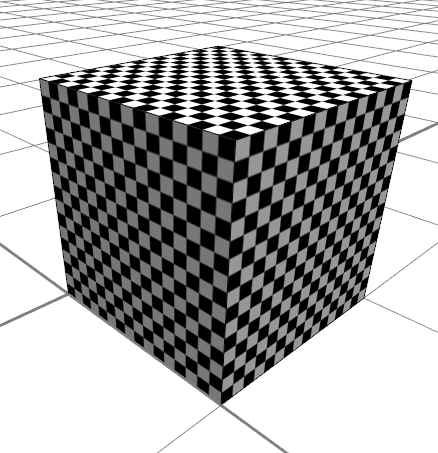
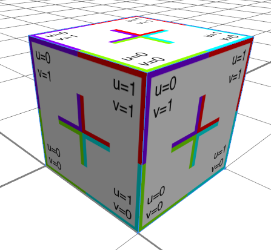

Built-in Assets and Textures
CGA supports a number of built-in assets and textures which are always available.
Geometry Assets
All geometries have vertex normals and texture coordinates on the first texture layer (COLORMAP).
- primitiveQuad - a unit quad.
- primitiveDisk - a unit disk.
- primitiveCube - a unit cube.
- primitiveSphere - a unit sphere.
- primitiveCylinder - a unit cylinder.
- primitiveCone - a unit cone.
Textures
- builtin:default - a shiny 16x16 black and white checkerboard.
- builtin:uvtest.png - our standard test rexture.
Examples
Init-->
primitiveCube()
texture("builtin:default")

Init-->
primitiveCube()
texture("builtin:uvtest.png")
